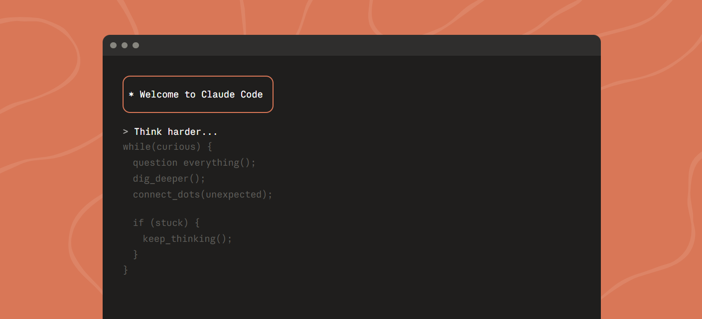

1
Terminal
가장 강력한 풀 기능 CLI — 파일 편집, 명령 실행, 프로젝트 전체 관리

Image source: claude.com/product/claude-codeStep 1 — 설치
운영체제에 맞는 방법으로 설치합니다:
# macOS / Linux / WSL (권장)
curl -fsSL https://claude.ai/install.sh | bash
# Windows PowerShell (권장)
irm https://claude.ai/install.ps1 | iex
# Windows CMD
curl -fsSL https://claude.ai/install.cmd -o install.cmd && install.cmd && del install.cmd
# Homebrew (macOS)
brew install --cask claude-code
# WinGet (Windows)
winget install Anthropic.ClaudeCode
Windows 사용자: 설치 전 Git for Windows가 먼저 설치되어 있어야 합니다.
[Option] 설치 확인
설치 후 아래 명령어로 설치 유형과 버전을 확인합니다:
claude doctorStep 2 — 로그인
첫 실행 시 자동으로 로그인 화면이 나타납니다. Claude 구독(Pro, Max, Team, Enterprise) 또는 Anthropic Console 계정이 필요합니다.
claudeStep 3 — 프로젝트에서 시작
# 프로젝트 폴더로 이동 후 실행
cd your-project
claude
# 특정 모델로 시작
claude --model opus
# 이전 세션 이어하기
claude --continue
# 권한 확인 없이 자동 실행 (bypass 모드) — CI/자동화 환경에서 유용
claude --dangerously-skip-permissions
# Chrome 브라우저 제어 모드로 시작 (Beta, Chrome 확장 프로그램 필요)
claude --chrome
주의: --dangerously-skip-permissions는 파일 수정·명령 실행 등 모든 작업을 승인 없이 자동으로 처리합니다. 신뢰할 수 있는 환경에서만 사용하세요.
Step 4 — 프로젝트 초기화 (권장)
# CLAUDE.md 생성 — 프로젝트 규칙/아키텍처/스타일 정의
/initStep 5 — 스크립트 & CI용 Non-Interactive 모드
# 한 번 실행하고 결과 출력
claude -p "이 코드에서 버그를 찾아줘"
# 파이프로 입력 전달
cat error.log | claude -p "오류 분석해줘"
# 로그 모니터링 → Slack 알림
tail -f app.log | claude -p "이상 징후 발견 시 Slack으로 알려줘"
# CI에서 번역 자동화
claude -p "새 문자열을 한국어로 번역하고 PR 올려줘"
요구 사항: macOS 13.0+, Windows 10 1809+, Ubuntu 20.04+. 4GB+ RAM.
자동 업데이트: Native Install (curl/PowerShell/CMD)로 설치하면 백그라운드에서 자동 업데이트됩니다. Homebrew/WinGet은 수동 업데이트가 필요합니다 (brew upgrade claude-code).
더 알아보기: 설치 중 문제가 발생하면 공식 설치 가이드를 참고하세요. Claude Code의 설치 및 활용 방법은 claude.com/product/claude-code에서도 확인할 수 있습니다.